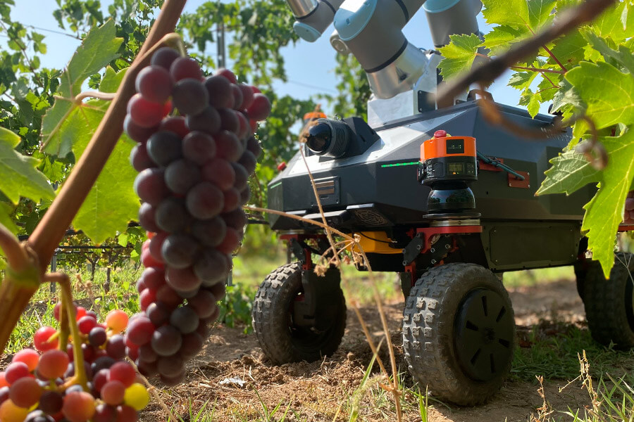

MIEMBROS DEL GRUPO
Programadores Back-end

Daniel Benavides Belmonte
Diseñadora Web.

Carlos Ipiens Quintanar
Diseñadora Web.
Programadores Front-End

Alba Oliver Navarro
Diseñadora Web.

Sobre Nosotros
Hola, buenas.
Somos los creadores de Robotánica, un grupo de estudiantes entusiasmados por la programación, nos gusta desarrollar para aportar soluciones innovadoras a todo tipo de sectores.
Apostamos esta vez con Robotánica por la unión de la tecnología y la agricultura pudiendo no solo así mejorar los resultados sino también ayudar a realizar de una forma más cómoda y rápida tareas que hasta el momento habían resultado complejas.